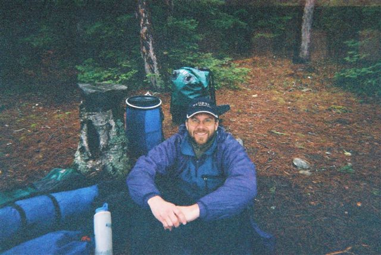
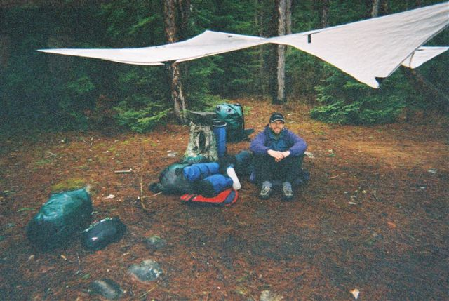
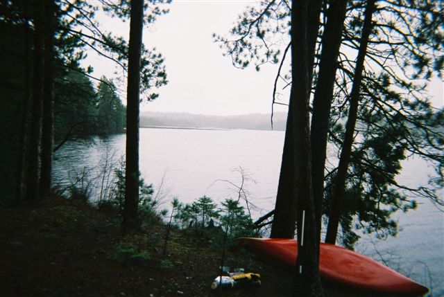
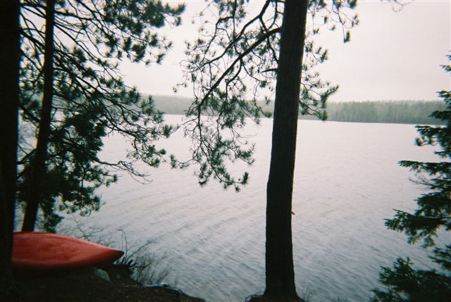
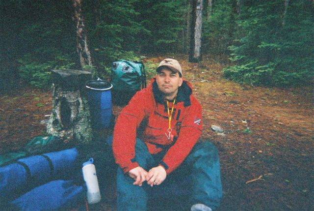
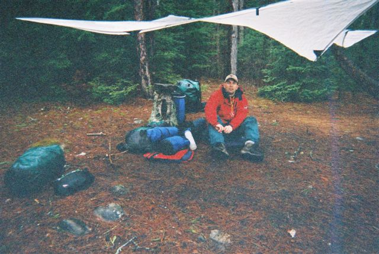
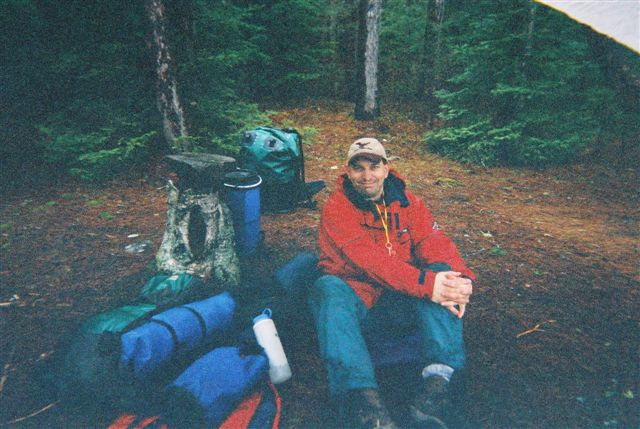

We decided to follow the footsteps of a random set of guys on an crazy early season brook trout fishing trip. After a bush road trip, we found a slanted site. 2 days of hard rain, and high temps of 6C. The fishing was a surprise. The lake holds largmouth bass in addition to the brookies we were after. We happened to catch two, frozen sluggish brutes, both released, while fishing all day for brookies. The tarp was our friend, as was the volumous wood we burned. Lucky for us the site was rarely used, so plenty of deadfall was within easy reach. A monster fire during a break in the rain, a nice dinner and then we were chased into a leaking tent for the night. In the end, despite this being cold we had serious fun, and the annual spring fishing trip was on.
      